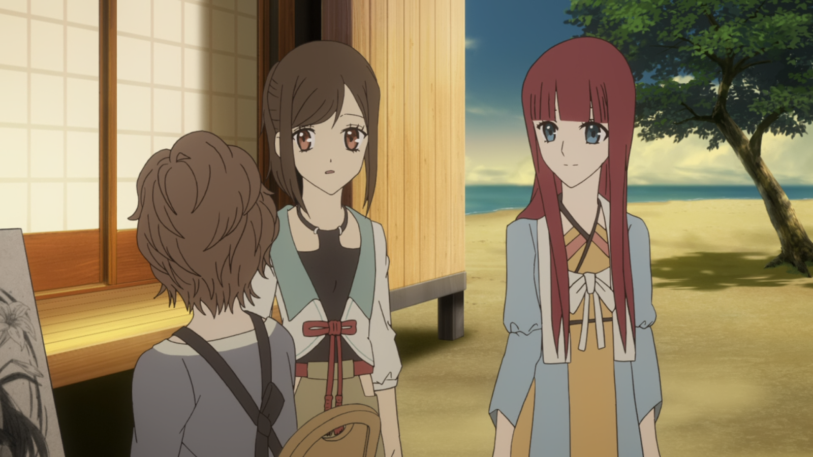
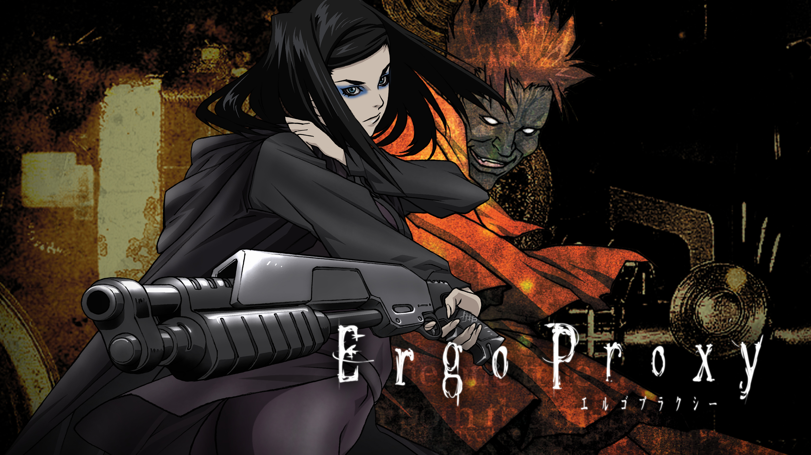
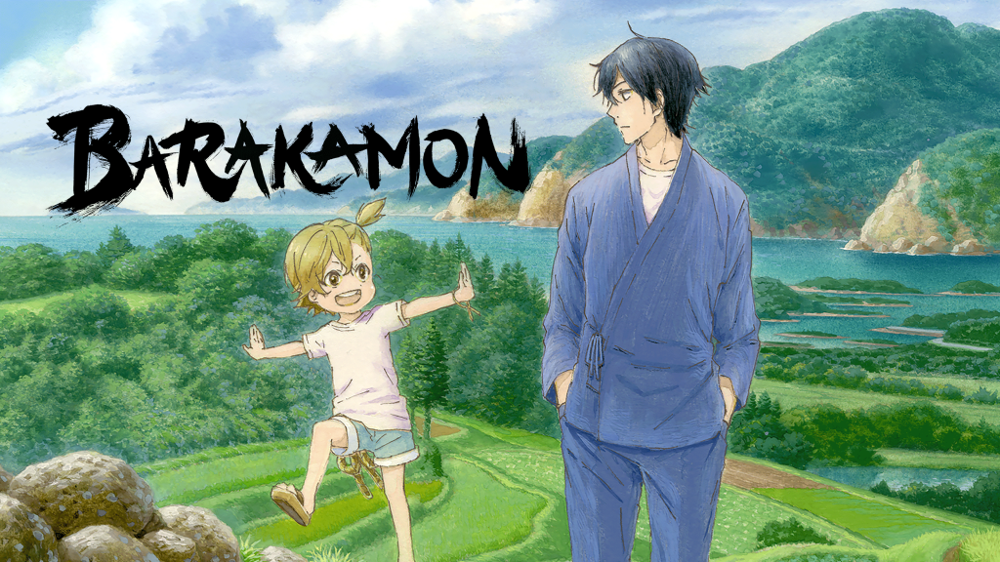
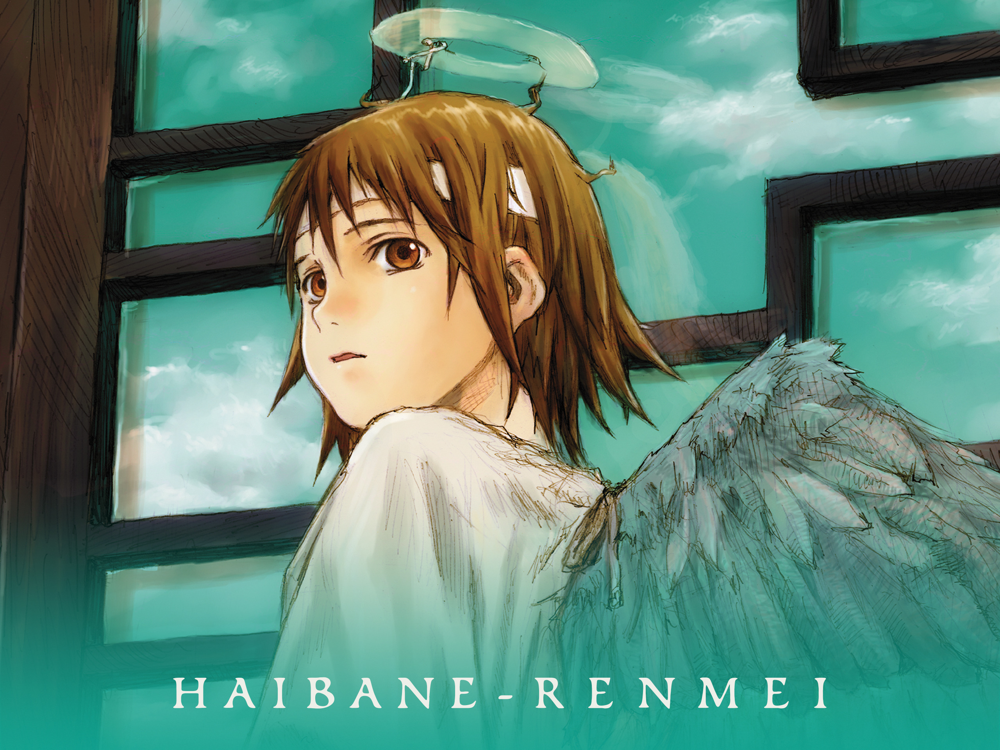
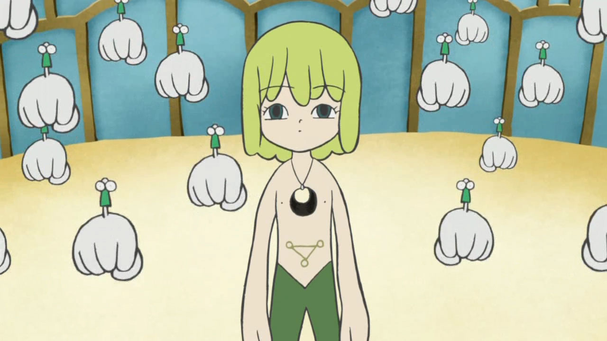
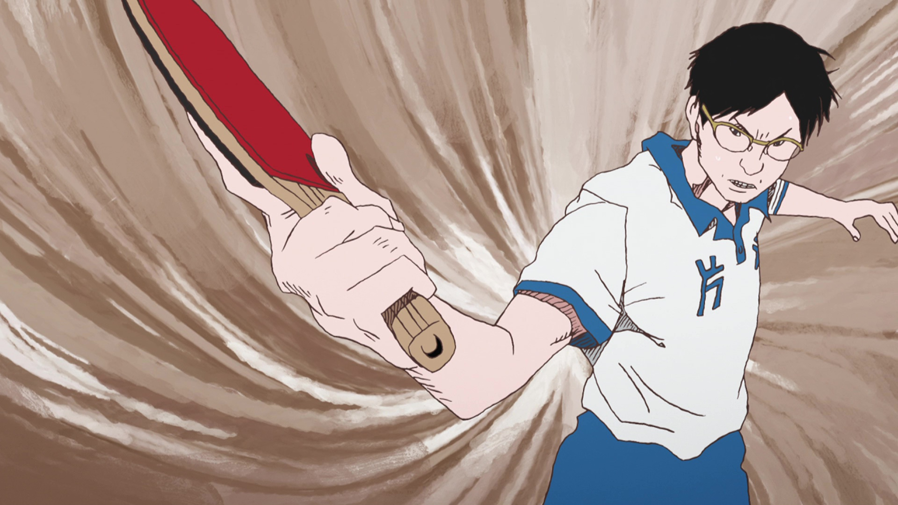
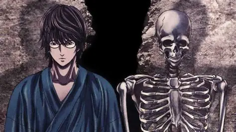
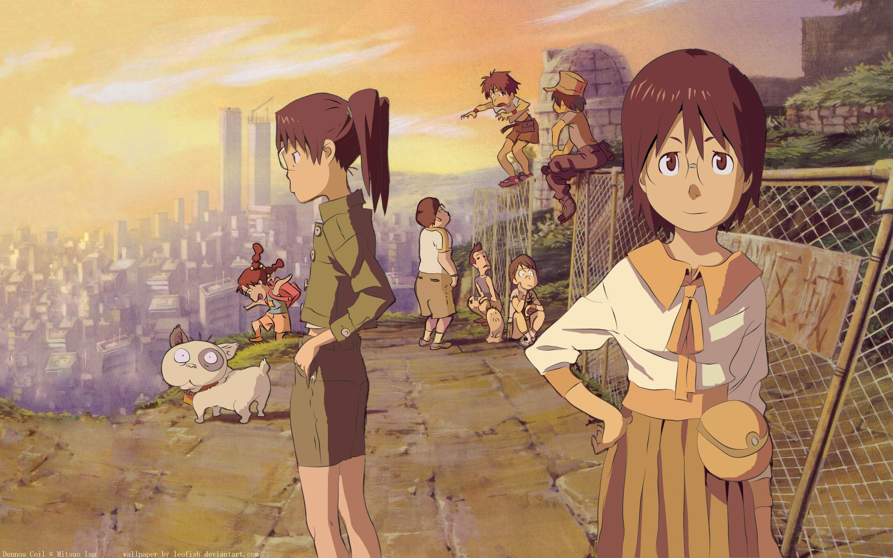

SMASH Senpai
Top 10 Best Underrated Anime You Must Watch
Not every great anime becomes mainstream. Some series quietly deliver incredible storytelling, unforgettable characters, and emotional depth — yet never receive the attention they truly deserve. This article ranks the Top 10 Best Underrated Anime of All Time, focusing on hidden gems that slipped under the radar despite their quality.
These anime may not dominate popularity charts, but they leave a lasting impact on viewers who discover them. From psychological thrillers to emotional slice-of-life stories, every entry here earned its spot through narrative strength, originality, and cult appreciation among anime fans.
Sponsored
#1 Shinsekai Yori
Shinsekai Yori is one of the most hauntingly beautiful and intellectually challenging anime ever created, yet it remains criminally underrated. Set in a distant future where humans possess psychic powers, the series slowly unravels a society built on fear, control, and moral compromise. At first glance, it may appear calm and slow-paced, but beneath that surface lies an unsettling psychological thriller that questions the very nature of humanity.
What makes Shinsekai Yori exceptional is its willingness to take risks. The story does not rely on action or fanservice; instead, it builds tension through atmosphere, world-building, and ethical dilemmas. As secrets about the society are revealed, viewers are forced to confront uncomfortable questions about oppression, survival, and whether peace achieved through cruelty can ever be justified.
The character development is subtle yet powerful, with each protagonist shaped by trauma, loss, and harsh truths. The anime’s ending is especially unforgettable, leaving viewers emotionally conflicted rather than satisfied. Shinsekai Yori is not just an anime — it is an experience that lingers in your mind long after the final episode.

play anime smash or pass here (not sponsored)
SMASH SENPAI – Smash or Pass#2 Ergo Proxy
Ergo Proxy is a cyberpunk psychological anime that blends philosophy, identity, and existential dread into a dense but rewarding narrative. Set in a dystopian future where humans and androids coexist, the series explores what it truly means to be human in a world governed by artificial intelligence and forgotten history.
The anime deliberately avoids simple explanations, forcing viewers to think deeply about each episode. Themes such as self-awareness, consciousness, free will, and societal decay are woven into surreal imagery and cryptic dialogue. This complexity scared away casual viewers, which is exactly why Ergo Proxy never reached mainstream popularity.
Despite this, those who finish the series often regard it as a masterpiece. The atmosphere is unmatched, the soundtrack enhances the psychological tension, and the story rewards patience. Ergo Proxy is an anime for viewers who enjoy depth over spectacle — and that is precisely why it deserves far more recognition.
Sponsored
#3 Barakamon
Barakamon is a refreshing slice-of-life anime that focuses on personal growth, creativity, and human connection. The story follows Seishuu Handa, a talented but emotionally immature calligrapher who moves to a rural island after a public outburst. What follows is a heartwarming journey of self-discovery.
Unlike dramatic or high-stakes anime, Barakamon finds beauty in simplicity. The island’s residents — especially the energetic child Naru — slowly teach Handa the importance of humility, patience, and community. The humor is natural, the emotions feel genuine, and the pacing allows every moment to breathe.
Barakamon is underrated because it does not chase trends. It offers comfort, reflection, and quiet joy. For viewers tired of constant action and conflict, this anime is a reminder that growth can happen through kindness and everyday experiences.
#4 Texhnolyze

Texhnolyze is one of the darkest and most nihilistic anime ever created, which is exactly why it remains so deeply underrated. Set in the decaying underground city of Lux, the series paints a brutal picture of humanity’s self-destruction through violence, technological obsession, and emotional detachment. The world feels lifeless, cold, and intentionally uncomfortable — and that is by design.
Unlike most anime, Texhnolyze barely holds the viewer’s hand. Dialogue is sparse, exposition is minimal, and meaning is conveyed through imagery, silence, and atmosphere. This storytelling approach turns away casual viewers, but rewards those willing to engage deeply. The themes revolve around despair, loss of purpose, and the inevitability of collapse in a society that has lost hope.
The characters are tragic, broken individuals struggling to find meaning in a world that offers none. Texhnolyze does not aim to entertain — it aims to confront. Its ending is one of the most devastating in anime history, leaving viewers emotionally hollow yet intellectually fulfilled. It is a masterpiece for those who appreciate philosophical storytelling and raw realism.
Sponsored
#5 Haibane Renmei
Haibane Renmei is a quiet, symbolic anime that explores themes of guilt, redemption, and emotional healing. The story follows Rakka, a young girl reborn with angel-like wings in a mysterious town where time feels suspended. Rather than focusing on action or fantasy spectacle, the series gently unravels the emotional struggles of its characters.
What makes Haibane Renmei underrated is its subtlety. The anime rarely explains its world directly, allowing viewers to interpret symbolism on a personal level. Topics such as depression, self-forgiveness, and the weight of past mistakes are handled with incredible sensitivity and respect.
The pacing is slow and reflective, creating a peaceful yet melancholic atmosphere. For viewers willing to engage emotionally, Haibane Renmei becomes a deeply personal experience. It is an anime that doesn’t seek attention — it waits quietly to be discovered, making it one of the most meaningful hidden gems in anime history.
#6 Kaiba
Kaiba is a deceptive anime — its childlike art style hides one of the most emotionally devastating and thought-provoking stories in the medium. Set in a future where memories can be transferred and bodies replaced, the series explores identity, love, and the moral consequences of technological immortality.
The anime challenges viewers by presenting horrifying concepts through innocent visuals, creating a powerful emotional contrast. Themes of class inequality, exploitation, and emotional loss are central to the narrative. Kaiba asks difficult questions: If memories define who we are, what happens when they are stolen or altered?
Despite its brilliance, Kaiba was overlooked due to its unconventional presentation. Those who give it a chance often find it unforgettable. It is a rare anime that proves art style does not determine emotional depth, and that simplicity can convey complex human suffering.
Sponsored
#7 Ping Pong the Animation
Ping Pong the Animation is far more than a sports anime — it is a character-driven exploration of ambition, identity, and personal growth. Directed by Masaaki Yuasa, the series uses a rough, expressive art style that prioritizes emotion over realism.
Each character has a distinct motivation and emotional struggle, making the competition feel deeply personal. Rather than focusing solely on winning, the anime explores why people compete, what they fear, and how failure shapes them. The matches become metaphors for internal conflict rather than physical contests.
Despite critical acclaim, Ping Pong never reached mainstream popularity due to its unconventional visuals. However, its storytelling, soundtrack, and character arcs are among the strongest in anime. It is a masterpiece for viewers who appreciate psychological depth and realism.
#8 Aoi Bungaku Series
Aoi Bungaku Series adapts classic Japanese literature into anime form, creating a collection of dark, introspective stories that explore alienation, obsession, and despair. Each arc is stylistically unique, reflecting the tone of the original literary work.
Stories like “No Longer Human” and “Hell Screen” delve deeply into psychological suffering and moral decay. The anime does not shy away from uncomfortable topics, presenting them with artistic integrity and emotional weight.
Because it lacks traditional anime tropes, Aoi Bungaku remains underappreciated. However, for viewers interested in mature storytelling and literary depth, it offers a rare and enriching experience unlike anything else in anime.
#9 Dennou Coil
Dennou Coil blends childhood adventure with technological anxiety, creating a surprisingly deep and emotional sci-fi story. Set in a near future where children use augmented reality glasses, the anime explores themes of grief, memory, and digital escapism.
What starts as playful exploration slowly transforms into a story about loss and emotional trauma. The series treats its young characters with respect, allowing them to experience complex emotions without oversimplification.
Dennou Coil is underrated because it defies categorization — it is neither purely for children nor adults. Those who watch it discover a heartfelt narrative that reflects modern society’s relationship with technology and loss.
#10 Planetes

Planetes is a realistic space anime that focuses on human ambition, failure, and purpose rather than fantasy or spectacle. Following a team responsible for cleaning space debris, the series explores the overlooked side of space exploration.
The anime balances technical realism with emotional storytelling. Characters struggle with dreams, regrets, and societal limitations, making them feel deeply human. Unlike traditional sci-fi, Planetes grounds its story in realism and emotional nuance.
Despite its quality, Planetes never gained mainstream attention. It remains a hidden gem for viewers seeking thoughtful, mature storytelling grounded in real-world concerns.
Still Can’t Decide?
jump straight into the action and vote Smash or Pass yourself on SMASH Senpai.
PLAY SMASH OR PASS